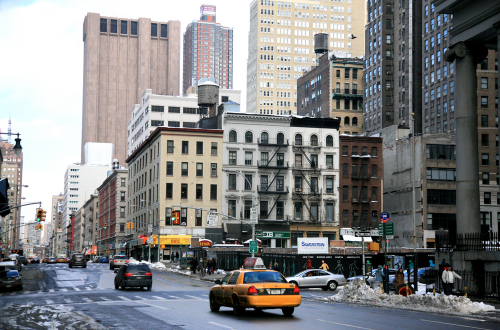

Color Thresholding is an important concept in computer vision. It is used as a step in object detection by selecting regions of an image of a certain color. The algorithm works as follows:
Click Prepare Source Canvas to load the image to be processed. Click an area of the image to select the color threshold. Set the tolerance value and click Color Threshold to obtain the binary image for this color thresholding.

|